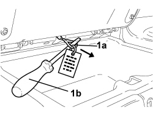

0010T79 HOOD HYDRAULIC SYSTEM - DISCHARGE AND RESTORE PRESSURE
- Path
- Procedures > 00 MAINTENANCE > 0010 NEW VEHICLES AND MAINTENANCE > 0010T VEHICLE FLUIDS > 0010T79 HOOD HYDRAULIC SYSTEM - DISCHARGE AND RESTORE PRESSURE
- Kind
- repair procedure (removal / refitting; the operation number is the code)
- Applies to
- engines: 2.2 JTS, 3.2 JTS; all production periods
- Interactive page
- https://sloeber94.github.io/elrnDB-aBrrSpdr/en/#/946002002
Applies to: engines: 2.2 JTS, 3.2 JTS; all production periods
To carry out checks, maintenance or repair operations with the hood stopped in any intermediate position, if the operation is expected to take more than 10 minutes, it is advisable to place the hood in the position necessary to carry out the operation, using the electric control, and then discharge the hydraulic system pressure as described below.
DISCHARGING HYDRAULIC SYSTEM PRESSURE
- Open the oddments compartment behind the right seat.
1. Pull hydraulic system pressure discharge valve operating cable (1a) until it is in the end of travel position. Use screwdriver (1b) supplied or another suitable tool.

Applies to: engines: 2.2 JTS, 3.2 JTS; all production periods
At the end of the maintenance check or repair operation, activate the "restore hydraulic system pressure" following the instructions below.
RESTORING HYDRAULIC SYSTEM PRESSURE
Op. 7030H03 HOOD MANUAL OPENING FOLLOWING DEACTIVATION OF HYDRAULIC SYSTEM - CARRY OUT PROCEDURE
Topics linked from this page (1)
Topics that link to this page (64)
- 0010T81 HOOD HYDRAULIC SYSTEM FLUID - CHECK LEVEL AND TOP UP IF NECESSARY
- 5570T61 MULTI-FUNCTION AERIAL - R.R.
- 5570T96 REAR SIDE SPEAKER (ONE), LEFT OR RIGHT- R.R
- 5580C40 SIDE BAG SENSOR (ONE), LH OR RH - R.R.
- 5580H10 PARKING OBSTACLE DETECTION DEVICE ELECTRONIC CONTROL UNIT - R.R.
- 7025D10 HOOD HOUSING COMPARTMENT COVER - ALIGNMENT
- 7025D11 HOOD HOUSING COMPARTMENT COVER OUTER LINING - R.R.
- 7025D12 HOOD HOUSING COMPARTMENT COVER INNER LINING - R.R.
- 7025D13 HOOD HOUSING COMPARTMENT SEAL - R.R.
- 7025D14 HOOD HOUSING COMPARTMENT COVER HINGE (ONE), LEFT OR RIGHT - R.R.
- 7025D15 TELESCOPIC STRUT FOR HOOD HOUSING COMPARTMENT COVER (ONE), LEFT OR RIGHT - R.R.
- 7025D16 HOOD HOUSING COMPARTMENT SELF-ADJUSTING BUFFERS - R.R.
- 7025D21 BADGE FOR HOOD HOUSING COMPARTMENT COVER OUTER LINING (ONE), LEFT OR RIGHT - R.R.
- 7025D22 HOOD HOUSING COMPARTMENT COVER OPENING CONTROL, LEFT AND RIGHT - R.R.
- 7025D24 HOOD HOUSING COMPARTMENT COVER LOCK (ONE), LEFT OR RIGHT - R.R.
- 7025D25 HOOD HOUSING COMPARTMENT COVER LOCK CLOSING SENSOR (ONE), LEFT OR RIGHT - R.R.
- 7025D26 HOOD HOUSING COMPARTMENT COVER LOCK STRIKER (ONE), LEFT OR RIGHT - R.R.
- 7025D27 HOOD HOUSING COMPARTMENT SIDE SEAL (ONE), LEFT OR RIGHT - R.R.
- 7030H05 HOOD - ADJUSTMENT
- 7030H14 HOOD - R.R.
- 7030H15 HOOD CLOTH - R.R.
- 7030H18 FLEXIBLE GUIDE ROD FOR MOVING HOOD REARSCREEN - R.R.
- 7030H20 HOOD FRONT PANEL - R.R.
- 7030H21 HOOD INNER LINING - R.R.
- 7030H23 HOOD TELESCOPIC STRUT (ONE), LEFT OR RIGHT - R.R
- 7030H25 TELESCOPIC STRUT FOR HOOD FIFTH ARC - R.R.
- 7030H29 END OF TRAVEL BUFFER FOR HOOD FIFTH ARC - R.R.
- 7030H30 END OF TRAVEL BUFFER BRACKET FOR HOOD FIFTH ARC - R.R.
- 7030H37 SEAL (ONE), LEFT OR RIGHT, HOOD SIDE SEAL - R.R.
- 7030H39 HOOD REAR SEAL - R.R.
- 7030H43 HOOD FRONT LOCK HYDRAULIC ACTUATOR - R.R.
- 7030H50 AUTOMATIC HOOD ACTIVATING SYSTEM CONTROL UNIT - R.R. FOLLOWING SYSTEM CHECK
- 7030H58 AUTOMATIC HOOD HYDRAULIC ACTIVATING SYSTEM MOTOR/PUMP ASSEMBLY - R.R.
- 7030H68 HOOD HYDRAULIC ACTUATOR SENSOR - R.R.
- 7030H69 HOOD COMPARTMENT COVER HYDRAULIC ACTUATOR SUPPORT - R.R.
- 7030H70 HOOD COMPARTMENT COVER HYDRAULIC ACTUATOR - R.R.
- 7030H71 HOOD COMPARTMENT COVER HYDRAULIC ACTUATOR SENSORS - R.R.
- 7030H72 HOOD HYDRAULIC ACTUATOR (ONE), LEFT OR RIGHT - R.R.
- 7030H74 HYDRAULIC ACTUATOR FOR HOOD ARCH 5 (ONE), LEFT OR RIGHT - R.R.
- 7030H75 HOOD FIFTH ARC POSITION SENSOR (ONE), LEFT OR RIGHT - R.R.
- 7030H76 PIPE FROM CONTROL UNIT TO HOOD HYDRAULIC ACTUATOR (HOOD EXTENSION MOVEMENT) - R.R.
- 7030H77 PIPE FROM CONTROL UNIT TO HOOD FIFTH ARC HYDRAULIC ACTUATOR (HOOD EXTENSION MOVEMENT) - R.R.
- 7030H78 PIPE FROM CONTROL UNIT TO HOOD HYDRAULIC ACTUATOR (HOOD CONTRACTION MOVEMENT) - R.R.
- 7030H79 PIPE FROM CONTROL UNIT TO HOOD FIFTH ARC HYDRAULIC ACTUATOR (HOOD CONTACTION MOVEMENT) - R.R.
- 7030H80 DUPLEX PIPE FROM CONTROL UNIT TO HOOD FRONT LOCK HYDRAULIC ACTUATOR (HOOD EXTENSION/CONTRACTION MOVEMENT)
- 7030H82 PIPE FROM CONTROL UNIT TO HOOD COMPARTMENT COVER HYDRAULIC ACTUATOR (HOOD EXTENSION MOVEMENT) - R.R.
- 7030H84 PIPE FROM CONTROL UNIT TO HOOD COMPARTMENT COVER HYDRAULIC ACTUATOR (HOOD CONTRACTION MOVEMENT) - R.R.
- 7040C11 HOOD HOUSING COMPARTMENT FLOOR TRIM - R.R.
- 7040C12 HOOD HOUSING COMPARTMENT FRONT TRIM - R.R.
- 7040C13 HOOD HOUSING COMPARTMENT REAR TRIM - R.R.
- 7040C14 HOOD HOUSING COMPARTMENT SIDE TRIM (ONE), LEFT OR RIGHT - R.R.
- 7040H50 REAR PANEL (ONE), LEFT OR RIGHT - R.R
- 7040H53 MOULDING ON REAR SIDE PANEL (ONE), LEFT OR RIGHT - R.R.
- 7040H54 GRILLE FOR SPEAKER IN REAR SIDE PANEL (ONE), LEFT OR RIGHT - R.R.
- 7040H73 ROLL BAR LOWER TRIM - R.R.
- 7055B20 ROLL BAR, LEFT OR RIGHT - R.R.
- 7055B21 ROLL BAR MOULDING - R.R.
- 7065A12 FRONT SEAT BELT (ONE), LEFT OR RIGHT, WITH PRETENSIONER ON REEL - R.R
- 7065A19 IDLER SUPPORT FOR FRONT SEAT BELT (ONE), LEFT OR RIGHT - R.R.
- 7065C96 REAR WIND STOP - R.R.
- 7210B71 BACKREST REAR PARTITION - R.R.
- 7210E46 HOOD HOUSING COVER - R.R.
- 7210E47 HOOD HOUSING COMPARTMENT SIDE COVER - R.R.
- 7210E54 R.R. BOOT